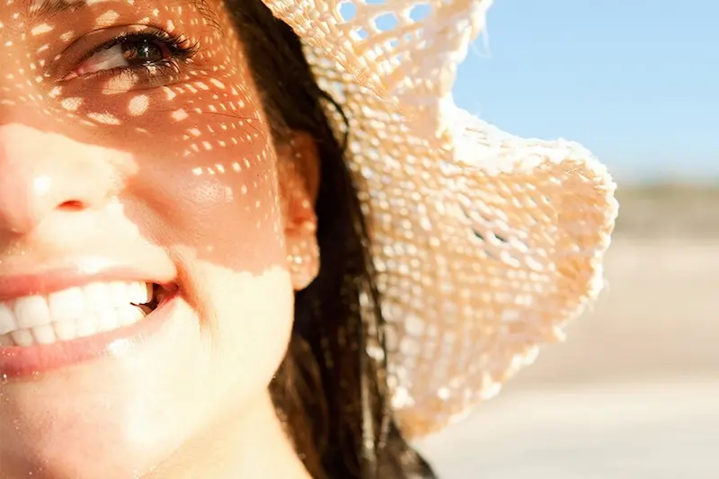
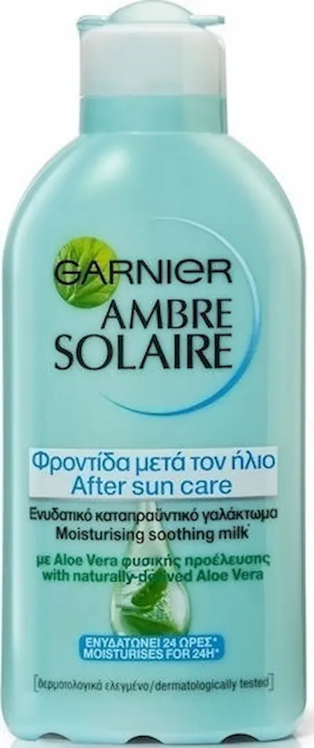
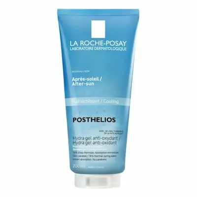
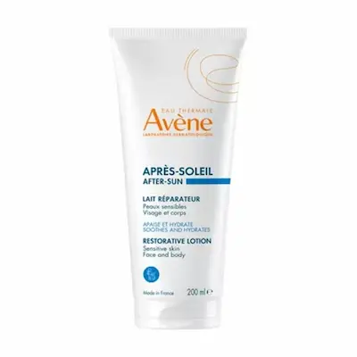
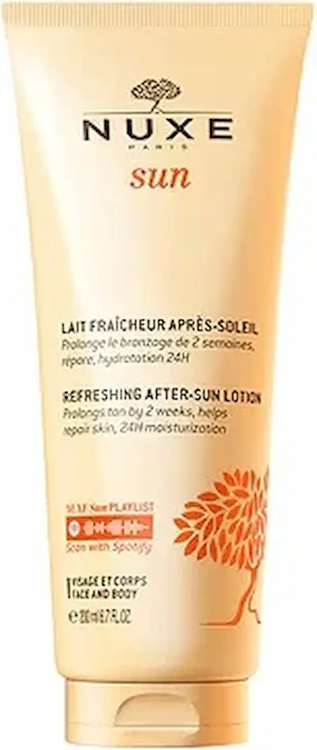
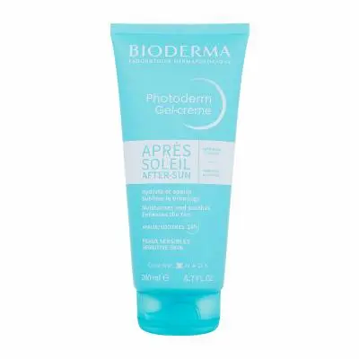
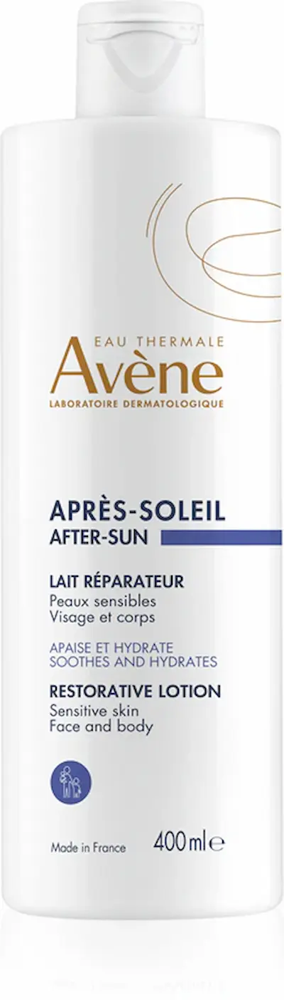

Cauza principală — radiațiile ultraviolete (UV)
Cauza principală — radiațiile ultraviolete (UV)
Arsuri solare: prezentare generală
- Ce este arsura solară: deteriorarea pielii cauzată de radiațiile ultraviolete UVA și UVB. Chiar și o expunere scurtă la soare fără protecție poate provoca roșeață, senzație de arsură și inflamație.
- Particularitățile climatului din România: vara, soarele intens, nivelul ridicat de radiații și reflexia de pe suprafețe cresc riscul de arsuri. Pielea sensibilă este în mod special predispusă la deteriorare.


Cauzele arsurilor solare
- Expunerea directă la soare: statul îndelungat la soare fără protecție crește riscul de arsuri și deteriorare a pielii.
- Factori climatici: soarele puternic, reflexia de pe apă și alte suprafețe în România intensifică efectul radiațiilor ultraviolete.


Simptome și stadii ale arsurilor solare
- Stadiu ușor: roșeață a pielii, senzație de căldură și ușoară arsură.
- Stadiu moderat: roșeață intensă, durere, umflare și descuamare.
- Stadiu sever: apariția bășicilor, durere puternică și posibilă stare generală alterată.


Primul ajutor în caz de arsură solară
- Răcirea pielii: aplică comprese reci sau prosoape umede și răcoroase pe zonele afectate pentru a reduce senzația de arsură și inflamația.
- Hidratarea: folosește geluri sau spray-uri ușoare pe bază de aloe vera, acid hialuronic sau pantenol pentru a restabili hidratarea și a calma pielea.
- Produse sigure: evită uleiurile și cremele grase pe o arsură recentă, deoarece pot intensifica inflamația. Alege produse hipoalergenice și testate dermatologic.


Îngrijirea pielii după arsură
- Refacerea barierei cutanate: folosește creme și balsamuri cu ceramide, pantenol și squalan pentru a întări stratul protector al pielii.
- Hidratare intensă: aplicarea regulată a produselor hidratante ușoare previne uscarea, descuamarea și apariția hiperpigmentării.
- Prevenirea complicațiilor: evită expunerea repetată la soare și frecarea zonelor afectate, poartă haine lejere și materiale moi.


Top produse pentru arsuri solare






Prevenirea arsurilor solare
- Creme cu protecție solară: alege produse cu SPF 30–50, aplică-le cu 20–30 de minute înainte de expunerea la soare și reaplică la fiecare 2–3 ore.
- Îmbrăcăminte și accesorii: poartă haine ușoare, care acoperă pielea, pălării și ochelari de soare pentru protecție suplimentară.
- Intervalul de expunere: evită soarele puternic între orele 11:00 și 16:00, mai ales pentru copii și pielea sensibilă.


Întrebări frecvente despre arsurile solare
Ce provoacă arsurile solare?
Arsurile solare apar din cauza expunerii pielii la radiațiile ultraviolete (UVA și UVB) fără protecție adecvată. Riscul crește în cazul expunerii prelungite la soare, mai ales în orele de vârf, dar și în cazul pielii sensibile sau al administrării anumitor medicamente.
Cum îngrijești corect pielea după o arsură solară?
Esențial este să răcești și să hidratezi pielea. Folosește geluri sau creme cu aloe vera, pantenol și vitamina E. Evită dușurile fierbinți, frecarea pielii și produsele agresive până la refacerea completă.
Se poate folosi cosmetica după o arsură solară?
Da, dar alege produse pentru piele sensibilă, fără alcool, parfumuri sau ingrediente iritante. Gelurile ușoare, hidratante și calmante sunt cele mai potrivite.
Ce ingrediente ajută în cazul arsurilor solare?
Eficiente sunt aloe vera, pantenolul, untul de shea, acidul hialuronic și vitamina E. Acestea hidratează, reduc inflamația, calmează pielea și accelerează procesul de refacere.
Ce trebuie evitat în cazul arsurilor solare?
Evită expunerea suplimentară la soare, apa fierbinte, produsele agresive, scrub-urile și produsele cu alcool. Nu exfolia pielea iritată și evită uleiurile care pot accentua inflamația.
Când trebuie să mergi la medic?
Dacă apar bășici, durere intensă, febră sau arsura acoperă o suprafață mare a corpului, este recomandat să consulți un dermatolog sau medicul de familie. Acesta poate recomanda tratamentul adecvat pentru recuperare.
Cum influențează clima din România riscul de arsuri solare?
Vara, temperaturile ridicate și radiațiile UV intense cresc riscul de arsuri, mai ales la prânz. Iarna riscul este mai scăzut, dar pielea poate deveni mai sensibilă după expuneri îndelungate. Este important să folosești protecție solară și să adaptezi rutina de îngrijire în funcție de sezon.